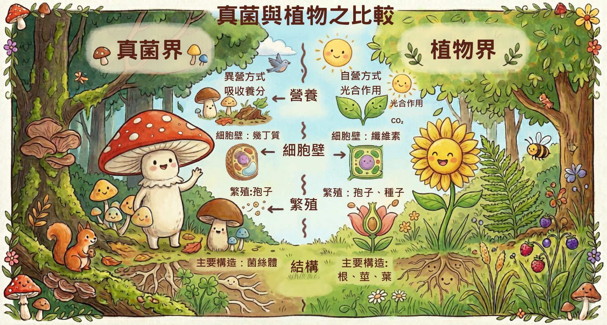
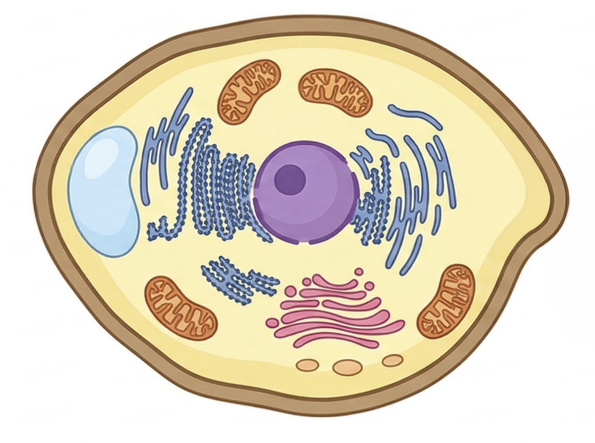
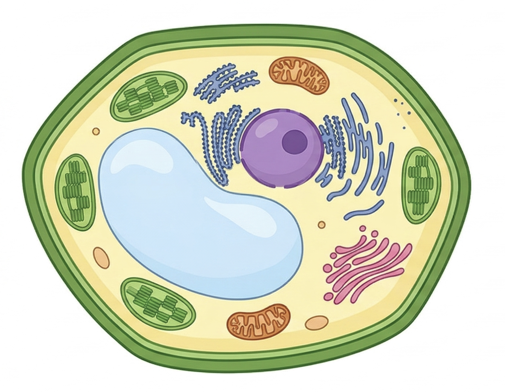

學習內容
真菌屬於真核生物，細胞有細胞壁，但沒有葉綠體，不能行光合作用。 它們會把酵素分泌到體外，先把外界物質分解成小分子後，再吸收養分，因此大多是分解者。
- 有細胞壁
- 沒有葉綠體
- 不能自行製造葡萄糖
- 靠體外分解後再吸收養分
1
任務一：看圖辨識
請點選哪一張比較像真菌細胞。真菌有細胞壁，但沒有葉綠體。

沒有葉綠體，不能行光合作用

具有葉綠體，可行光合作用
2
任務二：特徵分類
先點一下下方特徵卡，再點上方區域，把特徵放到正確的位置。
真菌
把屬於真菌的特徵放這裡
植物
把屬於植物的特徵放這裡
幾丁質細胞壁
沒有葉綠體
纖維素細胞壁
可行光合作用
3
任務三：流程排序
依照真菌獲得養分的過程，把步驟放到正確順序。
第 1 步
第 2 步
第 3 步
分泌酵素到體外
分解外界物質
吸收小分子養分
請先完成本頁所有任務，並全部答對，才能進入下一頁。
下一頁 →